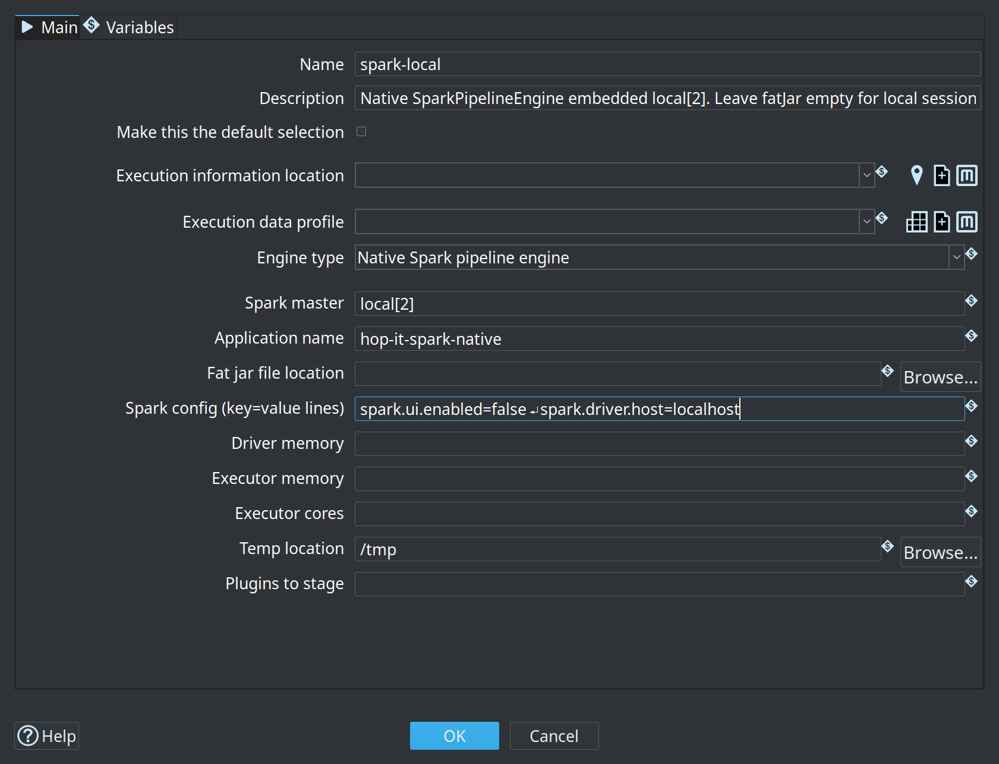
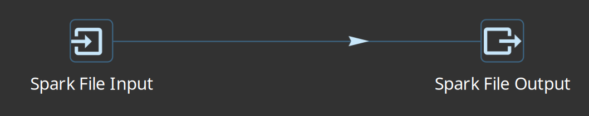
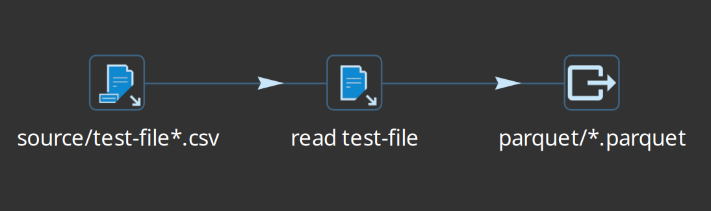
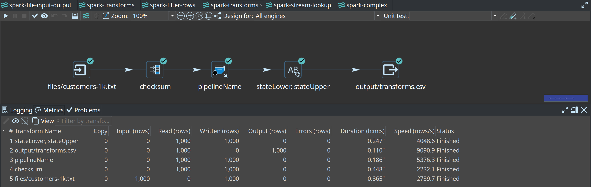
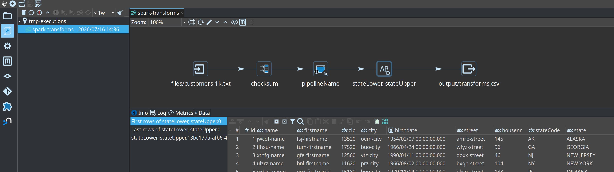
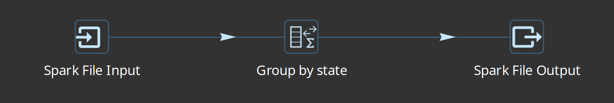
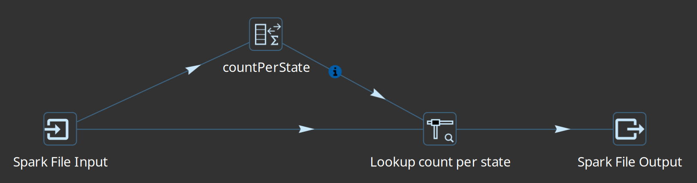
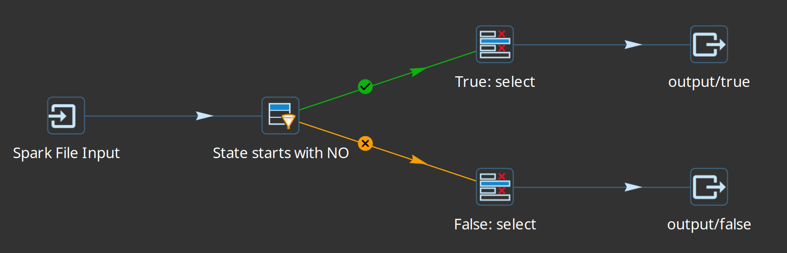

Getting started with the native Spark pipeline engine
- What is the native Spark pipeline engine?
- Prerequisites
- How to use it
- Building Spark-oriented pipelines
- Metrics and execution information
- How transforms map to Spark
- Limitations and design rules
- Examples from the integration tests
- Checklist
- Related pages
This guide is for data engineers who already know the basics of Hop pipelines (transforms, hops, run configurations, metadata) and want to run batch pipelines on Apache Spark using Hop’s native Spark engine.
It walks you from “what is this?” through a local[*] first run, cluster spark-submit, Spark-oriented I/O, metrics, limitations, and concrete examples from the integration-tests/spark-native project.
For Delta Lake and Apache Iceberg (ACID tables, catalogs, time travel, MERGE, maintenance), see the dedicated lakehouse guide after you have a working native Spark run configuration.
Before putting object-store paths in Spark File or Lake Table transforms, read Paths and file systems on native Spark — Hop VFS (s3://, named MinIO) and Spark/Hadoop URIs (s3a://, …) are different dialects.
For Simple Mapping / Pipeline Executor child pipelines on spark-submit, export a Spark project package (hop-conf -j … --export-spark-project=…) and pass --HopProjectPackage=… to MainSpark.
Hands-on multi-node demo (Docker Compose + sample project spark-demo — Simple Mapping and Workflow Executor): Cluster demo walk-through.
To deploy MainSpark JAR jobs to a Databricks workspace (classic clusters, UC Volumes, Job Run Deploy & run): Native Spark on Databricks.
What is the native Spark pipeline engine?
In one sentence
The native Spark pipeline engine takes the metadata of a Hop pipeline and executes it as a Spark SQL Dataset graph on Apache Spark 4.1.x — without translating the pipeline through Apache Beam.
How that differs from Beam Spark
Apache Hop already had a way to run pipelines on Spark: the Beam Spark pipeline engine. That path converts your Hop graph into an Apache Beam pipeline, then uses Beam’s Spark runner (Spark 3.5.x line).
The native engine skips Beam entirely:
-
Hop’s
SparkPipelineEnginebuilds a logical plan of Spark Datasets on the driver. -
Each Hop transform becomes either a native handler (Spark APIs such as
groupBy,join,read/write) or a genericmapPartitionsstage that runs a small single-threaded Hop mini-pipeline once per Spark partition. -
You use Hop’s Spark file input / Spark file output transforms for bulk Dataset I/O (not Beam file input/output).
| Topic | Native Spark engine | Beam Spark engine |
|---|---|---|
Purpose | Batch Hop pipelines on Spark Datasets / mapPartitions | Beam pipelines on Spark (batch and streaming) |
Spark line | 4.1.x (Scala 2.13) | 3.5.x (Scala 2.12; see Beam support matrix) |
Programming model | Spark SQL | Apache Beam PCollections + runners |
Streaming / windows | Out of scope — use Beam | Supported via Beam |
Preferred bulk I/O | Spark file input / Spark file output | Beam file input / Beam file output |
Side data (lookups) | Info streams (broadcast), e.g. Stream Lookup | Beam side inputs |
Conditional fan-out | Target streams (Filter Rows, Switch/Case) | Beam multi-output tags |
Engine id (plugin) |
| Beam Spark run configuration |
If you need streaming, windowing, or Beam-only connectors, stay on the Beam engines. If you want a straightforward batch path on modern Spark 4 with Dataset-oriented I/O, use native Spark.
How a Hop pipeline becomes a Spark job
-
You design a normal Hop pipeline (
.hpl) and select a Native Spark pipeline run configuration. -
On prepare, the engine walks the enabled transform graph in order.
-
For each transform it either:
-
applies a native handler that rewrites the hop as Spark Dataset operations, or
-
wraps the transform in
mapPartitionsso each Spark partition runs that transform in a tiny local Hop pipeline.
-
-
File outputs and other Spark actions materialise the graph (read → transform → write).
-
Transform metrics are collected via Spark accumulators and shown in Hop like any other engine.
You still design pipelines visually in Hop. Spark’s role is the distributed execution engine and the Dataset runtime under the hood.
Version support matrix
| Java: Hop requires Java 21 for the GUI, Spark: The native engine is built and tested against Spark 4.1.x (currently 4.1.3 in the Hop source tree, Scala 2.13). For |
| Hop version | Native Spark engine | Target Spark | Notes |
|---|---|---|---|
2.19.0+ | Included ( | 4.1.x (Scala 2.13) | Independent of Beam’s Spark 3.5.x client packs |
Earlier Hop versions | — | — | Native Spark engine not available; use Beam Spark if needed |
Do not mix this engine with Beam’s Spark 3.5 fat-jar packs or an accidental SPARK_HOME that points at Spark 3.x when you intend to use native Spark 4.1.
Prerequisites
-
Apache Hop 2.19+ with the engines-spark plugin (standard Hop client / assembly includes it).
-
Java 21.
-
Familiarity with Hop pipelines, metadata, and run configurations.
-
For cluster submit:
-
A Spark 4.1.x distribution (
SPARK_HOMEpinned to that tree). -
Network access to the master and workers.
-
Paths for data and metadata that workers can reach (HDFS, object store, shared FS).
-
-
Optional but recommended: an execution information location and execution data profile for history, metrics, and row samples in the GUI.
How to use it
Create a local[*] pipeline run configuration
This is the fastest way to learn: Spark runs inside the Hop process using all local cores (local[*]), with no cluster and no fat jar.
| On the Native Spark engine options tab, Load configuration template can pre-fill common setups (Local execution, Spark standalone server, spark-submit, Databricks, YARN, …). See Native Spark pipeline engine. |
For Iceberg TABLE mode, create a Spark Catalog entry and use Load catalog template (Hadoop local/object store, REST, Hive, Glue, Nessie, …). Each preset starts Extra conf with a commented # docs: link to vendor documentation. |
-
Open Metadata → Pipeline run configuration → New.
-
Give it a clear name, for example
spark-local. -
Set Engine type to Native Spark pipeline engine.
-
On the engine tab, set at least:
| Option | Suggested first value |
|---|---|
Spark master |
|
Application name |
|
Fat jar file location | Leave empty for pure |
Spark config | Optional; one |
Driver / executor memory & cores | Optional; leave empty for local defaults |
Temp location | Optional; defaults to the JVM temp directory |
-
On the main run-configuration tab, optionally attach:
-
Execution information location — where Hop stores run history
-
Execution data profile — which row samples to capture
-
-
Save the configuration.

Full option reference: Native Spark pipeline engine.
First pipeline on local[*]
-
Create a small batch pipeline, for example:
-
Spark file input — CSV path under your project, header and separator, field list
-
Filter Rows or Select Values — any familiar transform
-
Spark file output — path, format (
csvorparquet), save mode Overwrite
-
-
Run the pipeline and choose your
spark-localrun configuration. -
When it finishes, check:
-
Transform metrics on the pipeline graph (input / output / written / errors)
-
Execution Information perspective if you configured a location
-
You do not need spark-submit or a fat jar for this path. Hop starts an embedded Spark session and loads Spark from plugins/engines/spark/lib.
Run from the command line (local)
Same run configuration, no GUI:
./hop-run.sh \
--project=your-project \
--runconfig=spark-local \
--file=/path/to/your-pipeline.hplBuild a fat jar for cluster submit
On a real cluster you must not embed a second copy of Spark inside the application jar. The cluster already provides Spark 4.1. Embedding Spark leads to dual classpaths and failures on Java 21.
Use the special fat-jar token native-provided: Hop and plugins go into the jar; Spark stays out.
From Hop GUI
-
Tools → Generate a Hop fat jar (when prompted for Spark client version for native submit, use the native-provided style packaging for cluster submit — or use the CLI below for an explicit flag).
-
Save the jar outside the project (or gitignore it). Fat jars are large.
From the command line (recommended, explicit)
# From your Hop installation directory
./hop-conf.sh \
--generate-fat-jar=/tmp/hop-native-spark4-submit.jar \
--spark-client-version=native-provided| Token | When to use | Spark runtime |
|---|---|---|
|
| Cluster provides Spark 4.1.x (do not embed) |
| Rare: fat jar that includes Spark 4 from | Embedded Spark 4 |
Export project metadata
Cluster runs need your Hop metadata (run configurations, execution locations, connections, etc.) as a single JSON file.
-
GUI: Tools → Export metadata to JSON
-
CLI:
./hop-conf.sh \
--project=your-project \
--export-metadata=/tmp/hop-metadata.jsonKeep this export out of git if it is a point-in-time dump of secrets or large metadata; your project metadata/ folder is already the source of truth.
Detailed spark-submit instructions
-
Install or unpack Spark 4.1.x (Hadoop 3 build is typical).
-
Pin
SPARK_HOMEto that directory. IfSPARK_HOMEstill points at an older Spark (for example 3.3), even aspark-submitbinary from a 4.1 tree can re-exec the wrongspark-classand load the wrong version. -
Build the native-provided fat jar and export metadata (previous sections).
-
Ensure the pipeline run configuration used on the cluster:
-
Engine = Native Spark pipeline engine (not Beam Spark)
-
Master blank (so
spark-submit --masterwins) or set tospark://host:7077 -
Fat jar field empty (the submit jar already carries Hop)
-
-
Submit:
export SPARK_HOME=/path/to/spark-4.1.x-bin-hadoop3
"${SPARK_HOME}/bin/spark-submit" \
--master spark://your-master:7077 \
--deploy-mode client \
--class org.apache.hop.spark.run.MainSpark \
/tmp/hop-native-spark4-submit.jar \
/path/to/pipeline.hpl \
/tmp/hop-metadata.json \
YourNativeSparkRunConfig \
/path/to/cluster-env-config.jsonMain class: org.apache.hop.spark.run.MainSpark
Positional arguments:
-
Path to the pipeline (
.hpl) — must be readable on the driver -
Path to metadata JSON — readable on the driver
-
Name of the native Spark pipeline run configuration (as in metadata)
-
Optional: environment configuration file (JSON) — extra variables for the run (see below)
Named arguments (equivalent):
"${SPARK_HOME}/bin/spark-submit" \
--master spark://your-master:7077 \
--class org.apache.hop.spark.run.MainSpark \
/tmp/hop-native-spark4-submit.jar \
--HopPipelinePath=/path/to/pipeline.hpl \
--HopMetadataPath=/tmp/hop-metadata.json \
--HopRunConfigurationName=YourNativeSparkRunConfig \
--HopConfigFile=/path/to/cluster-env-config.jsonEnvironment configuration file (4th argument)
On a laptop, Hop projects usually set PROJECT_HOME to a local folder. In a clustered spark-submit job that path often has no meaning: drivers and executors do not share your desktop filesystem, and paths in pipelines are typically ${PROJECT_HOME}/… or other project variables.
Pass an optional environment configuration file as the 4th positional argument (or --HopConfigFile=…). It uses the same JSON format as a Hop environment / hop-config variables file. MainSpark loads every described variable into the pipeline variable space before execution.
Example cluster-env-config.json:
{
"variables": [
{
"name": "PROJECT_HOME",
"value": "s3a://hop-project/",
"description": "Project root on object storage for the cluster run (Spark/Hadoop S3A URI, not Hop VFS s3://)"
},
{
"name": "OUTPUT_ROOT",
"value": "s3a://hop-project/output/",
"description": "Shared output prefix visible to all executors"
}
]
}Use this for any value that must differ between local development and the cluster: connection endpoints, bucket prefixes, ${PROJECT_HOME}, credentials placeholders you resolve elsewhere, and so on.
|
Data paths in the pipeline (files, tables, object stores) must be reachable from workers, not only from your laptop. Prefer HDFS, S3/GS/ABFS, or a shared mount — and set PROJECT_HOME (and similar) in the environment config so ${PROJECT_HOME}/… resolves correctly on the cluster.
Resource flags (optional examples):
"${SPARK_HOME}/bin/spark-submit" \
--master spark://your-master:7077 \
--executor-memory 4g \
--executor-cores 2 \
--driver-memory 2g \
--class org.apache.hop.spark.run.MainSpark \
/tmp/hop-native-spark4-submit.jar \
/path/to/pipeline.hpl \
/tmp/hop-metadata.json \
YourNativeSparkRunConfig \
/path/to/cluster-env-config.jsonYou can also put memory/core settings in the run configuration’s engine options; CLI flags are useful for per-job overrides.
Building Spark-oriented pipelines
Prefer Spark file input and Spark file output
For large or production Dataset I/O, use the dedicated transforms in the Big Data category:
-
Spark file input —
spark.read.format(…).load -
Spark file output —
df.write.format(…).save
Typical first pipeline shape:

Spark file input
Common options:
| Option | Notes |
|---|---|
Spark path (Hadoop URI) | File, directory, or glob visible to Spark (local path on |
Format |
|
Header / separator / quote | CSV and text |
Field list | Preferred for stable schemas. With a header, columns are selected and cast by name. Without a header, Spark names columns |
Infer schema | Optional; explicit fields are safer for production |
Spark file output
| Option | Notes |
|---|---|
Spark path (Hadoop URI) | Output directory/prefix Spark should write to (same Spark/Hadoop dialect as input; not Hop VFS) |
Format |
|
Save mode | Overwrite, Append, Ignore, ErrorIfExists |
Header | CSV/text |
Coalesce | e.g. |
Partition by | Optional partition column list for directory partitioning |
Writes run as Spark actions when the engine materialises the graph. Prefer Spark file output for large partitioned writes to object stores or HDFS.
Open table formats (Delta Lake / Apache Iceberg)
Classic Spark File transforms cover csv / parquet / json / orc / text only. For ACID lake tables use the dedicated Lake Table transforms (Big Data category):
-
Spark Catalog metadata for Iceberg TABLE mode
Connector JARs ship in the default Hop assembly under plugins/engines/spark/lib/{delta,iceberg} (and ride a native-provided fat jar for cluster submit). Full session conf, PATH vs TABLE, and samples: Lakehouse tables on the native Spark engine.
Classic Hop I/O and ${Internal.Transform.ID}
You can still use classic transforms such as Text File Input, Text File Output, Get File Names, or Microsoft Excel Input on the generic mapPartitions path (useful for POCs and small lookups). Those plugins are staged for the Spark engine via plugins/engines/spark/dependencies.xml.
Sources with no previous hop (for example Get File Names, or Excel/Text Input reading a fixed file list) run on a single partition so the same small file is not listed or opened once per executor — the same idea as Beam’s single-thread pattern for non-Beam inputs.
Unique filenames per partition
Each Spark partition runs its own copy of a classic writer. If every copy uses the same path, files overwrite each other.
Recommended: put ${Internal.Transform.ID} in the filename template, for example:
${PROJECT_HOME}/out/export_${Internal.Transform.ID}.csvOn the native Spark engine, that variable is set to a readable value:
{transform-name}-{partition-id}${Internal.Transform.CopyNr} and ${Internal.Transform.BundleNr} are set to the Spark partition id as well.
Also: the engine enables Beam-parity parallel-file context so Text File Output can auto-append <transformId><partition> to the built filename (same idea as Beam’s beamContext suffix). Relying on ${Internal.Transform.ID} in the path remains the clearest approach for operators.
| For large distributed writes, prefer Spark file output (Spark manages part files). Classic Text File Output is ideal for small POC side-loads and local/shared paths where unique names per partition are enough. |
Accept filenames from a previous transform
Get File Names → Text File Input (accept filenames from field) works on native Spark: filename rows are the main Dataset into Text File Input; the mini-pipeline rebinds the accept source to the partition injector and preloads filename rows before the file reader drains them.
Example shape from the integration tests:

Metrics and execution information
Live metrics in the pipeline editor
While a native Spark pipeline runs (and when it finishes), Hop shows transform-level metrics on the graph — lines read/written/input/output, errors, and running/finished state — similar to the local engine. Values are aggregated on the driver from Spark accumulators.

Execution information location
To keep history after the run (and to drill into past executions):
-
Create an Execution information location (file, caching file, remote Hop Server, …).
-
Optionally create an Execution data profile (first/last/random rows, etc.).
-
On the Native Spark pipeline run configuration, set both on the main tab.
-
Run a pipeline, then open the Execution Information perspective.

How data is produced:
-
State and metrics (
updateExecutionState) — computed on the driver fromEngineMetrics/ accumulators for all transform types. -
Row samples (
registerData) — collected on executors for genericmapPartitionstransforms when a data profile is set, then merged for the GUI (parent/child execution hierarchy, similar to Beam).
| If the location is file-based and you need samples from cluster workers, the root folder must be writable from every executor (shared filesystem or object store). A path that exists only on the driver will still get pipeline/transform state, but executor samples will be missing or incomplete. |
On Databricks, a practical pattern is a Caching File location whose root is a named Databricks VFS URI on a UC Volume (driver writes execution JSON via the Files API; laptop GUI opens the same location). Walkthrough: Execution information on a UC Volume.
On local[*], Spark’s Jackson libraries must not shadow Hop’s Jackson under the plugin classloader. The Spark plugin packaging excludes core Jackson jars so sampling and HopJson keep working.
How transforms map to Spark
Native handlers
These use Spark Dataset APIs on the driver graph (no per-row Hop mini-pipeline for the core of the work):
| Transform | Spark mapping |
|---|---|
Memory Group By |
|
Merge Join |
|
Unique Rows |
|
Sort Rows |
|
Spark file input / output |
|
Generic mapPartitions transforms
Most other transforms — Filter Rows, Switch/Case, Stream Lookup, Calculator, Select Values, Dummy, classic file transforms, Excel, and many plugins — run inside mapPartitions:
-
Each Spark partition starts a single-threaded Hop mini-pipeline for that transform.
-
Partition rows are injected; outputs are collected back into a Dataset.
-
Plugin JARs used by those transforms must be on the Spark classpath (
dependencies.xmlfor the engine plugin, and the fat jar on the cluster).
Info streams and target streams
- Info streams (side data)
-
Transforms such as Stream Lookup need a full secondary dataset while processing the main stream. The engine broadcasts the info Dataset to partitions (same idea as Beam
View.asList). Configure the Stream Lookup from transform name exactly. - Target streams (conditional routing)
-
Filter Rows (true/false) and Switch/Case (cases + default) declare named targets. Each input row goes to one successor. Downstream hops use keys of the form
Previous - TARGET - Current. - Multiple previous transforms
-
If several transforms hop into one (branches rejoin), row layouts must match (names, order, types). The engine unions those Datasets after a layout check (Beam Flatten equivalent).
Limitations and design rules
Keep these in mind when moving a local pipeline to native Spark.
| Topic | Behaviour on native Spark |
|---|---|
Transforms marked Not Supported | See the authoritative list on Native Spark Pipeline Engine — Transforms not supported. It is derived from each transform page’s Supported Engines table (Native Spark row). Examples: sorted Group By (use Memory Group By), Beam-only I/O, barriers (Blocking until transforms finish), result-row hops, Kafka consumer, multi-way / sorted merges. |
Sorted Group By | Not supported. Use Memory Group By (native |
Copy vs Distribute on multi-hop output | Not implemented (same stance as Beam). Named target streams route by condition; plain multi-next hops without target metadata are rejected. Round-robin distribute is not available. |
Streaming / windows | Out of scope. Use the Beam engines. |
Native Spark Kafka | Not supported. There is no Hop transform that maps to Spark’s structured streaming / Kafka source-sink APIs. For Kafka-oriented Beam pipelines, use the Beam engines (e.g. Beam Kafka consumer/producer). Hop’s own Kafka transforms (if used) are not native-Spark Dataset I/O. |
Spark SQL | Not supported as a first-class surface. You cannot submit arbitrary Spark SQL / |
MLlib / Spark ML | Not supported. There are no native handlers or transforms for training, pipelines, or model inference via Spark MLlib / |
Large Stream Lookup tables | Fully broadcast — size carefully. |
Unique Rows (error stream) | Reject-to-error style options may not apply; prefer Dataset-oriented dedup semantics. |
Transform copies / partitioning GUI | Parallelism comes from Spark partitions, not Hop “copies” in the local sense. |
Plugins in mapPartitions | Must be present on the Spark classpath (staged list + fat jar). Missing plugins fail at runtime on the executor. |
Beam-only transforms | Beam File I/O, Beam Kafka/Kinesis/BigQuery/… are for Beam engines, not native Spark. |
Examples from the integration tests
The Hop source tree includes a self-contained project:
integration-tests/spark-native/Open that folder as a Hop project (or copy patterns into your own). Workflows are named main-00xx-*.hwf and typically: clean output → run the Spark pipeline with spark-local → validate on the local engine.
0001 — Spark file input / output
Minimal path: read a CSV with Spark file input, write with Spark file output.
0002 — Memory Group By
Aggregation via the native Memory Group By handler (Spark groupBy).

0004 — Stream Lookup (info stream)
Main stream plus a lookup Dataset broadcast into Stream Lookup — exercises info streams end-to-end.

0005 — Filter Rows with target streams
True/false targets (conditional fan-out without Copy/Distribute).

0007 — Classic Text File Input and Spark write-back
Get File Names → Text File Input (accept filenames) → Spark file output (e.g. Parquet). Validates classic I/O and partition-safe readback.
Checklist
-
Java 21; Hop 2.19+ with
plugins/engines/spark -
Run configuration engine = Native Spark (not Beam Spark)
-
First success on
local[*]with Spark file input → transform → Spark file output -
Execution information location attached if you need history and samples
-
Cluster: fat jar with
--spark-client-version=native-provided -
Cluster:
SPARK_HOMEpinned to Spark 4.1.x -
Cluster: metadata JSON exported; run configuration name matches submit args
-
No sorted Group By; no reliance on Copy/Distribute multi-hop behaviour
-
Classic writers use
${Internal.Transform.ID}(or accept Spark file output for bulk writes) -
Lakehouse (optional): confirm
plugins/engines/spark/lib/{delta,iceberg}present; see lakehouse guide
Related pages
-
Native Spark pipeline engine (option reference)
-
Lakehouse tables on the native Spark engine (Delta / Iceberg)
-
Beam Spark pipeline engine (contrast)
-
hop-conf (fat jar, metadata export)